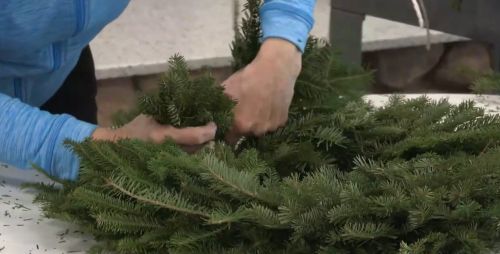

DIY Wreath Making Tutorial
A handcrafted balsam fir wreath is a perfect way to embrace the beauty and scent of the holiday season. The lush green needles and natural fragrance of balsam fir create a timeless, festive decoration that can add warmth and charm to any space. Whether you're looking to adorn your front door, decorate your home, or create a thoughtful handmade gift, making your own wreath can be a fun and rewarding experience.
I am sure you can come up with a million reasons why you can't make a wreath. In reality, making a Christmas wreath is a creative and fun activity that can be adapted to different skill levels. With some guidance and encouragement, I am certain you can make a beautiful wreath that reflects your personality!
In the following steps, we'll guide you through the process of creating a stunning balsam fir wreath, from selecting the right materials to adding those final decorative touches.

Adding the last tip bundle to the wreath
Making the Wreath
- Wind wire several times around the wire ring, pulling securely. Rather you wind away from you or toward you is not important as long as the wire is secure. I wind away from me toward the center of the wire ring.
- Place the first bundle of tips (green side up) on top of the secured wire. The first bundle of tips should be slightly longer than the rest of the bundles and should contain only fir tips. This will help when you are inserting the last bundle of tips.
- Wind the wire two or three times around the tip bundle and the wire ring and pull securely.
- Turn the wreath over and take one fir tip (non-green side up) and place it on top of the previous bundle (slanting outward), covering the wire and the wire ring. Wind the wire around the wire ring several times. The green side MUST face down. This is only to cover the wire on the back and will be seen from the front.
- Turn the wreath back to the front side. Place the second bundle on top of the first but down about 2-3 inches, slanting the tip to the outside of the wreath. Pull wire securely.
- Repeat Step 4.
- Repeat Steps 3 and 4 until you are back to the first tip bundle. Lift up the tip of the first bundle and tuck in the stem of the tip bunch. Pull wire securely. Continue until you are unable to add another bundle. It will be easier to insert the tip bundle at the end if the tips are a bit shorter -- 6 inches instead of 9 inches.
- Cut the wire about 8 inches long and insert it into a secure bundle of tips and twist or wrap it around a stem and twist.